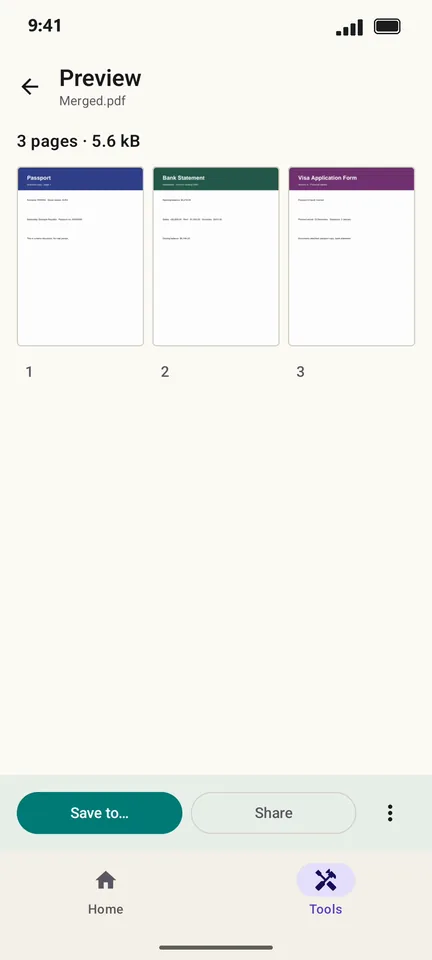
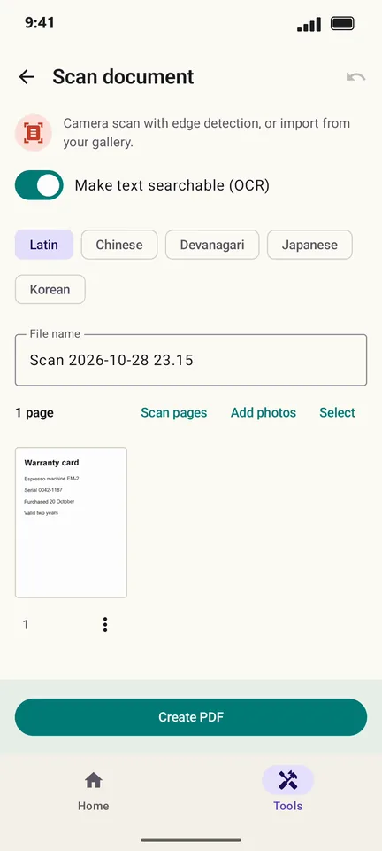
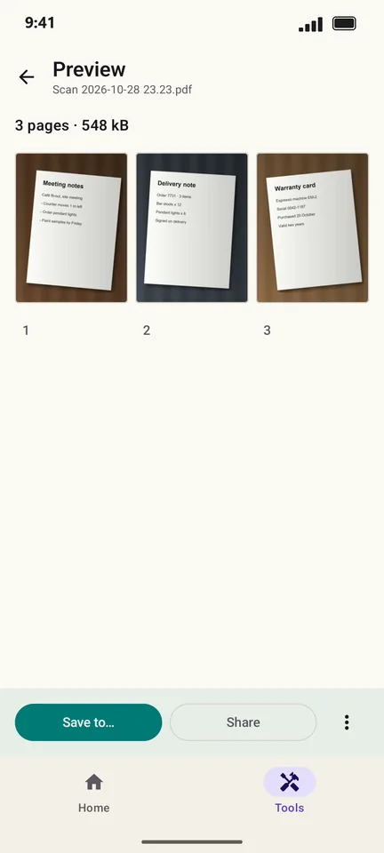
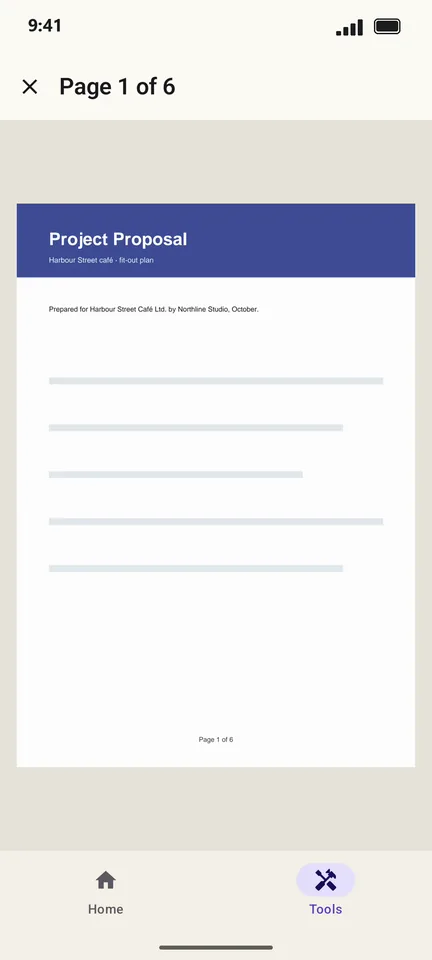
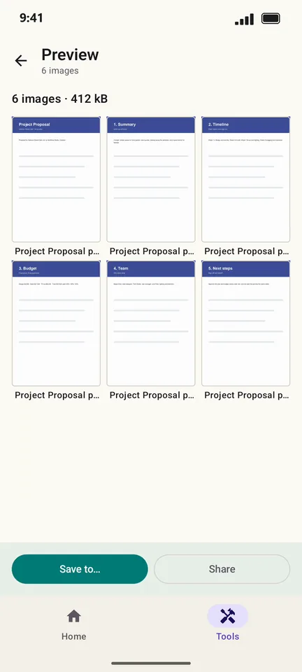
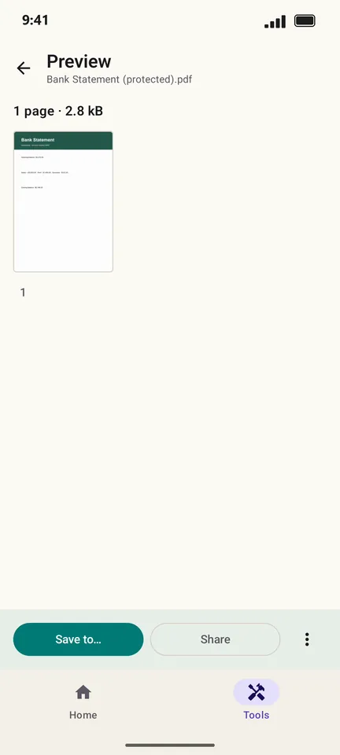
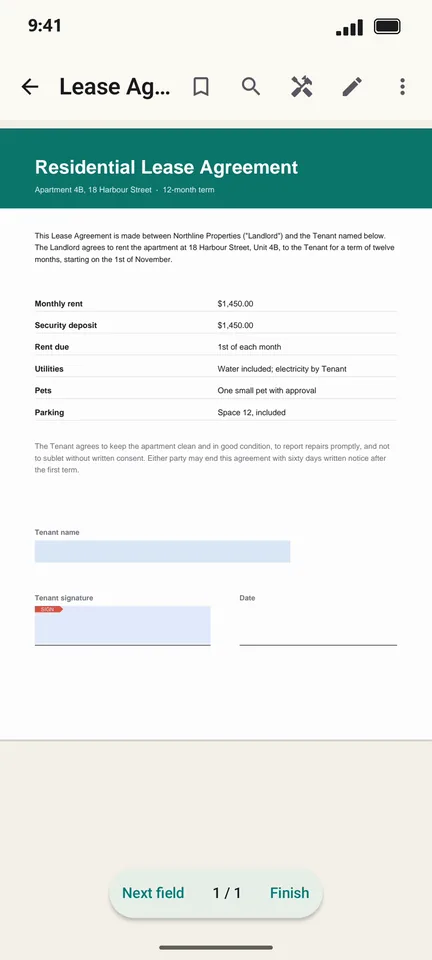

PDF how-to guides for Android
Sign, merge, compress, scan and edit PDFs on your phone. Each guide shows the real steps in PageCat PDF, a free PDF app with every tool included.
Get PageCat PDF on Google Play How to sign a PDF on your Android phone
How to sign a PDF on your Android phone
How to merge PDF files on Android How to compress a PDF on Android
How to compress a PDF on Android How to edit the text in a PDF on Android
How to edit the text in a PDF on Android
How to scan a document to PDF with your Android phone
How to turn photos into a PDF on Android How to split a PDF or extract pages on Android
How to split a PDF or extract pages on Android How to rotate, reorder or delete pages in a PDF on Android
How to rotate, reorder or delete pages in a PDF on Android How to crop the margins of a PDF on Android
How to crop the margins of a PDF on Android How to stamp or watermark a PDF on Android
How to stamp or watermark a PDF on Android
How to add page numbers to a PDF on Android How to make a scanned PDF searchable (OCR) on Android
How to make a scanned PDF searchable (OCR) on Android
How to convert PDF pages to JPG or PNG on Android
How to put a password on a PDF on Android How to listen to a PDF read aloud on Android
How to listen to a PDF read aloud on Android
How to find a PDF by a word inside it on Android How to highlight and mark up a PDF on Android
How to highlight and mark up a PDF on Android